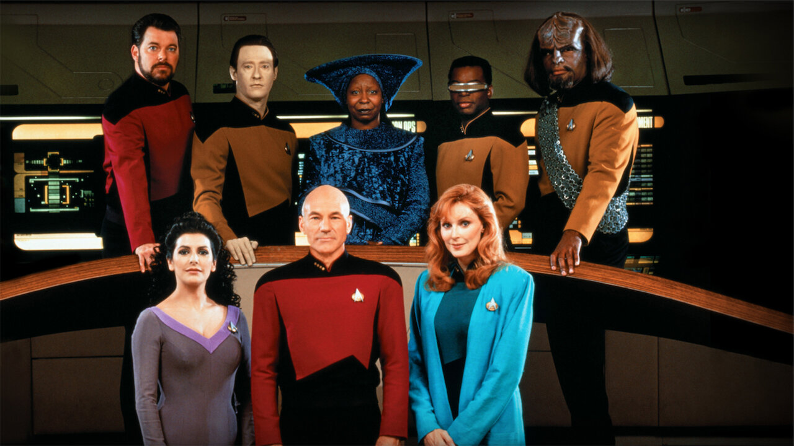

Hakkımda
Mehaba. Ben Cengi Mataracı! Ankarada yaşıyorum. Bilimkurgu izlemeyi ve okumayı çok seviyorum. Kodluyoruzun bu eğitim serisi sayesinde harika şeyler öğrendim ve öğrenmeye devam ediyorum! Siz de aramıza katılın!
İlgili Alanlarım
Sevdiğim Diziler
Star Trek: The Next Generation
Uzay Yolu:Yeni Nesil(Star Trek: The Next Generation) Gene RoddenBerry tarafından yaratılmış olan Uzay Yolu evreninde geçen bir bilimkurgu dizisidir. Türkiye'de 1990-1997 yılları arasında Star Tv'de yayınlanmışdır.